Appointment Manager: Self-Service Scheduling
Replacing phone-and-email scheduling chaos with a self-service platform that lets carriers and facilities coordinate appointments directly.
Design Leadership · Product Research · UX Design · 4 minute read
Problem statement
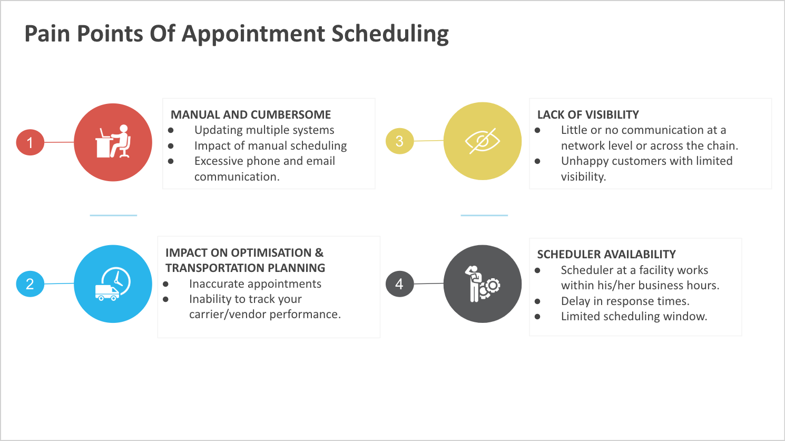
Current process
Appointment scheduling is a collaborative process between the facilities and the carriers. This process is currently manual in most of the facilities.
- A shipment is planned and tendered out for a carrier to accept the tender.
- Once the tender is accepted by the carrier, the carrier will have to coordinate with the pickup and delivery facilities to schedule appointments.
- The carrier will reach out to the facility via phone or email with the PO# / Shipment # and a preferred timing. The facilities usually use an excel sheet to maintain all appointments. They check their schedule and get back to the carrier with a confirmation. There is usually 2-3 email exchanges before an appointment is finalised.
- Rescheduling and cancelling of appointments also follows a similar process.
What is Appointment Manager?
Appointment Manager (AM) is a product that can be used at a facility level to enable appointment scheduling for shipments at a facility for delivery or pickup. It allows facilities and carriers to coordinate and seamlessly schedule and manage appointments.
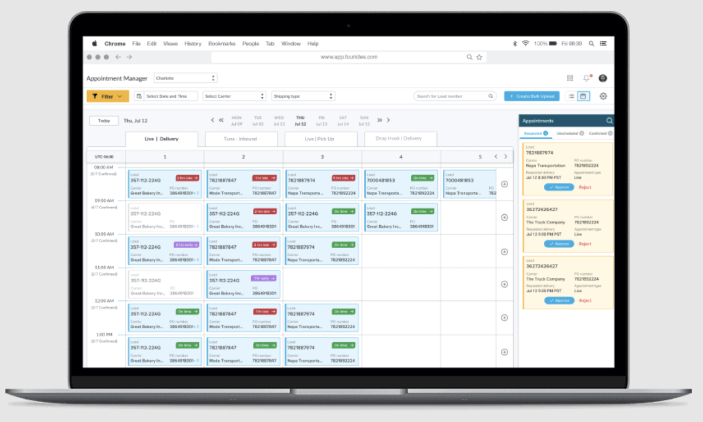
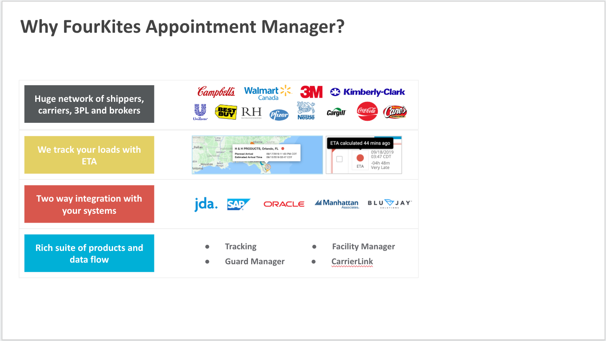
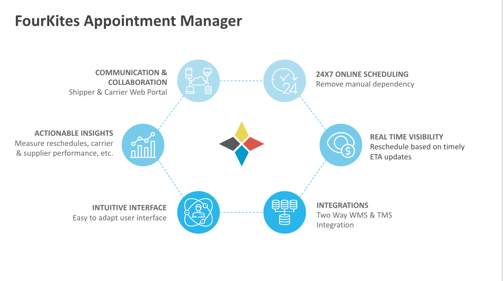
Discovery: Market Research
Objective: This document serves as a Market Research document Appointment Manager. It provides insights into the ground work on facilities, their scheduling process, pain points and scope of the product.
Case Study: We have spoke to few of our customer's on how their warehouses/DC's to get insight into the existing Appointment scheduling process, pain points and finalise our target customers for the initial phase.
- Carrier Corporation
- Cargil - Charlotte Facility
- Unilever
- Coca Cola
- Kraft Heniz
Customer personas
Below are the different personas who will use Appointment Manager. Please note that the track and trace users are NOT usually the users who will be using Appointment Manager. This is a facility and carrier facing product.
| Persona | Profile |
|---|---|
| Appointment Scheduler | Primary persona who manager appointments at a facility. Each facility works differently and they can call this persona with different names. |
| Facility Manager | Facility Manager can also be involved in scheduling or will be responsible for managing the facility operations and will want visibility into appointments. |
| Security Guard / Warehouse Manager | The security guard at the gate will require at least read only access for all confirmed appointments for a day and last minute changes so that they can validate the trucks that check in and check out at the facility. Similarly Warehouse manager will require visibility into the scheduled appointments and last minute changes to manage the same. |
| Scheduler - Carrier | Primary persona at the carrier side who is responsible for reaching out to the facility to schedule an appointment. |
| Scheduler - Customer / Vendor | Primary persona at the customer side who is responsible for reaching out to the facility to schedule appointments. In case of customer pickup (CPU) loads or vendor managed loads, where the customer or vendor is responsible for picking up or delivering that load, it also happens that the customers/vendors reach out to the facilities to book appointments. |
Warehouse Manager

Logistics Manager
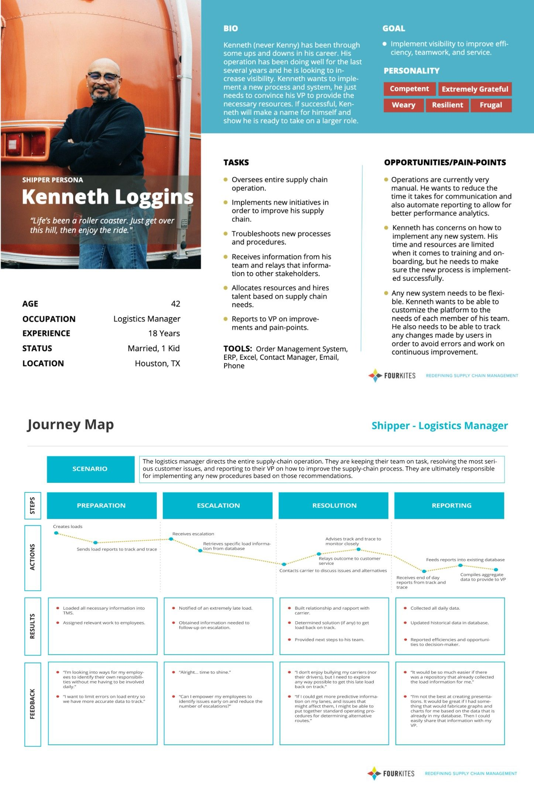
Gate Guard
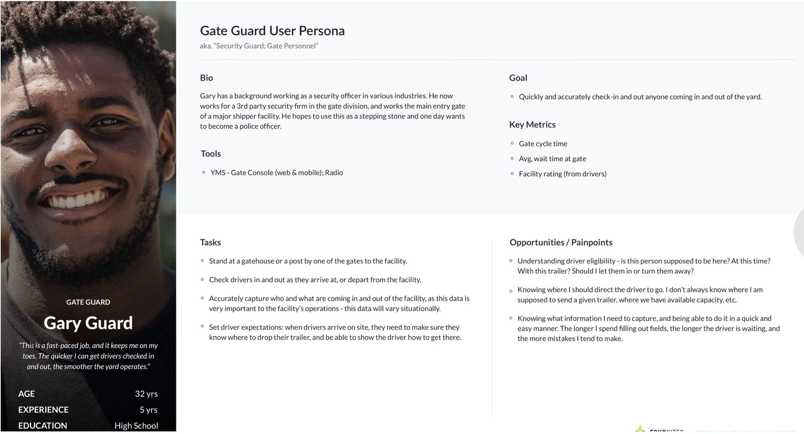
Competitive analysis
- C3 Solutions
- Data Docks
- One Network
- Descartes Appointment Scheduling
Existing Process
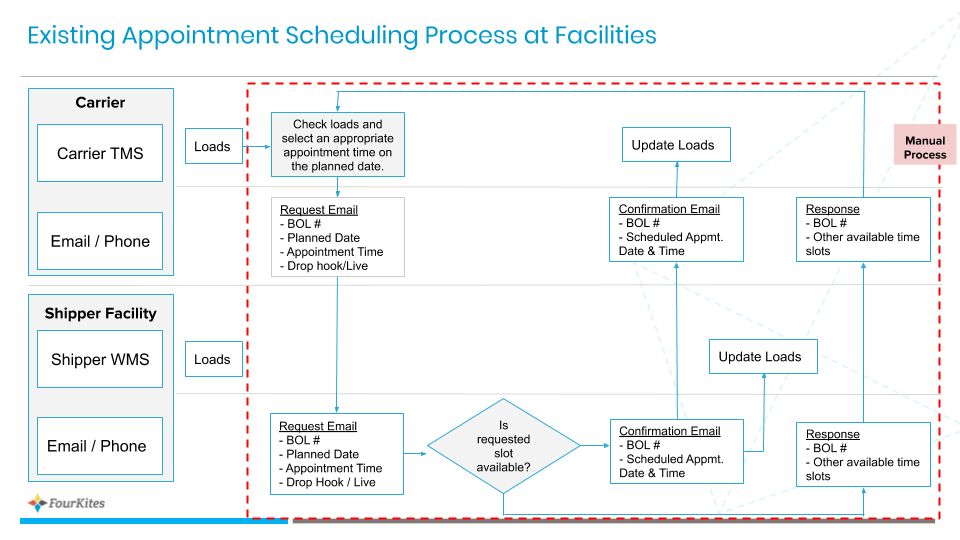
Proposed Model
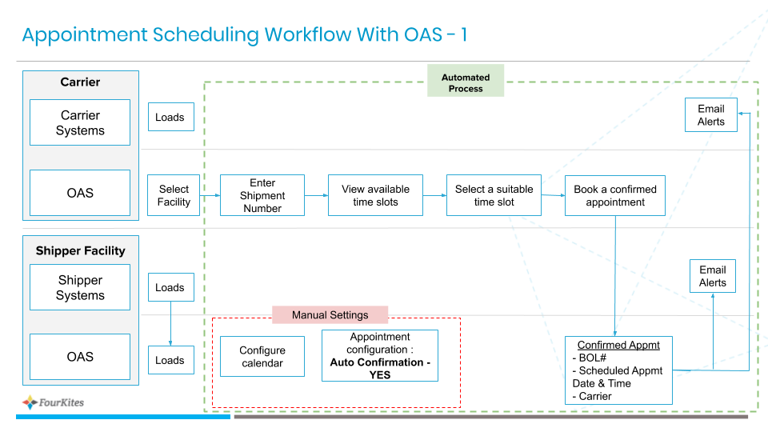
Opportunity canvas
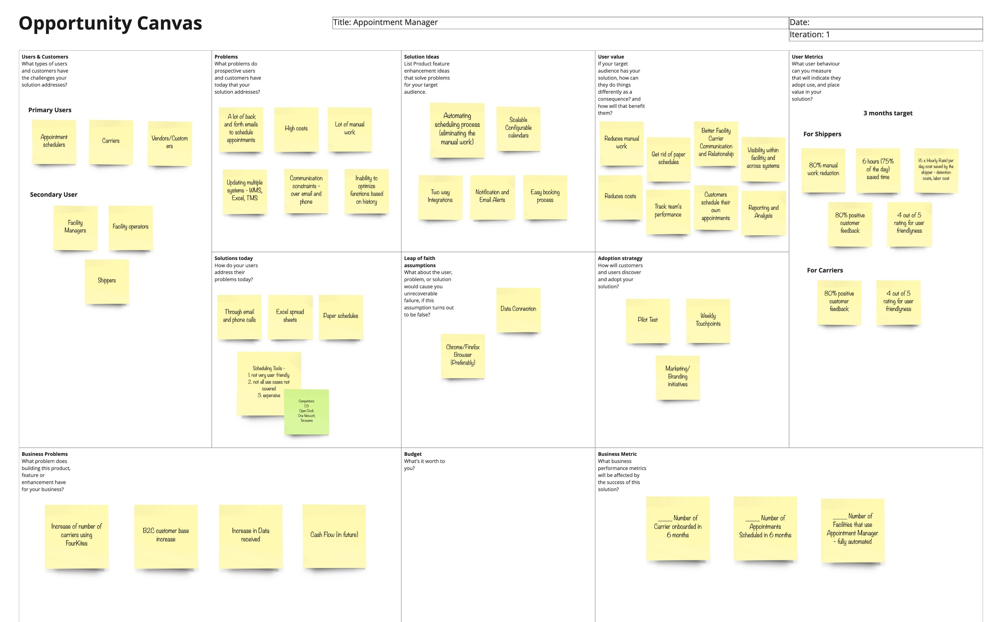
Key findings (big ideas)
- Eliminate The need For Manual Scheduling
- Accurate ETAs Powered with FourKites Core Platform
- Reduce Detention Costs
- Gain Capacity by Becoming a preferred Shipper
- Achieve Sustainability Score
Product flow
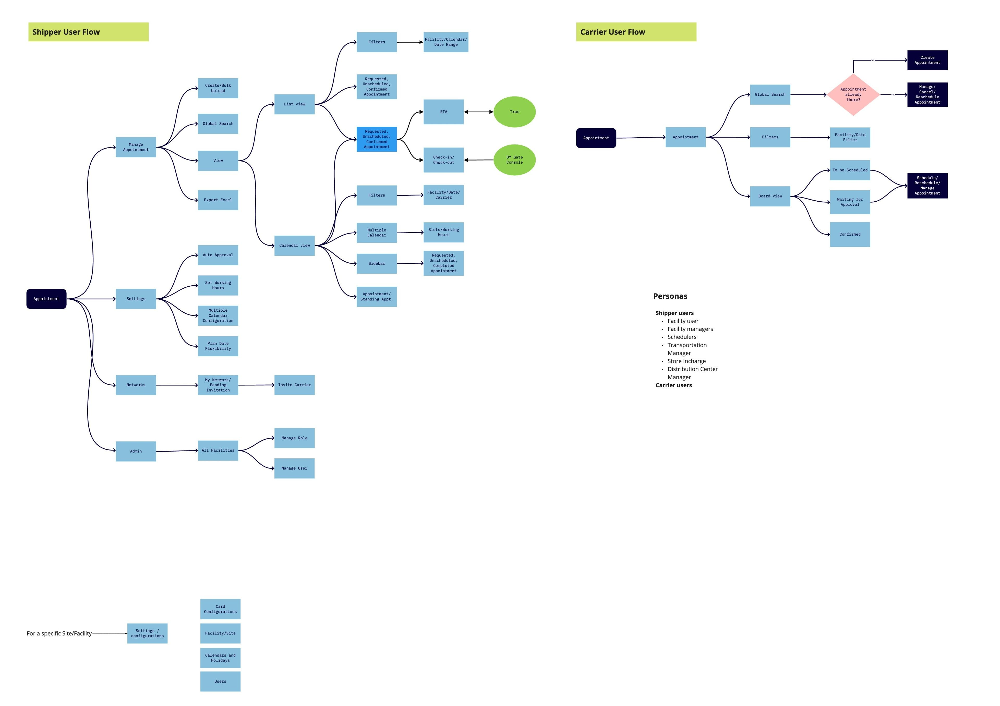
Hi-Fi designs: Shipper Portal
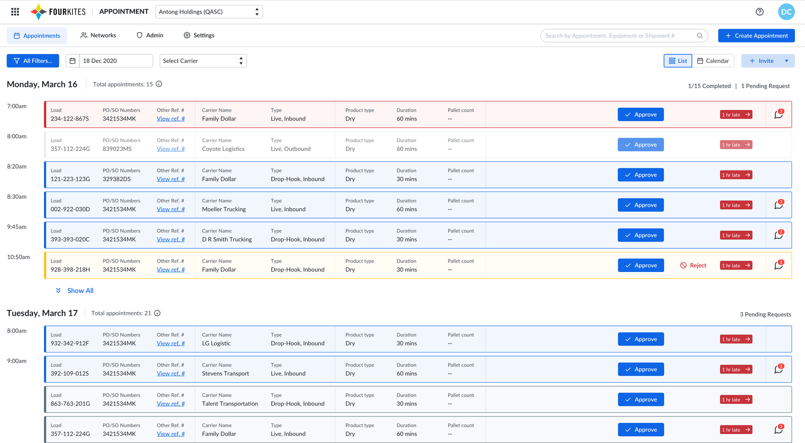
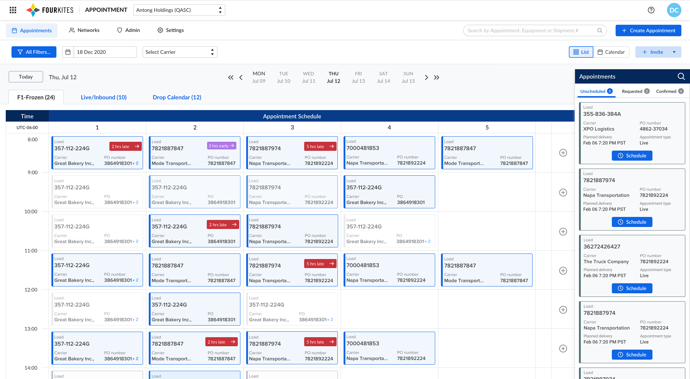
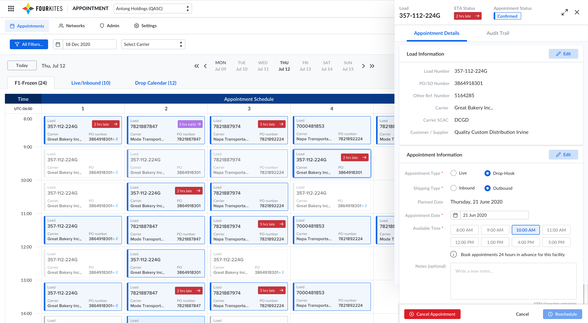
Carrier Portal
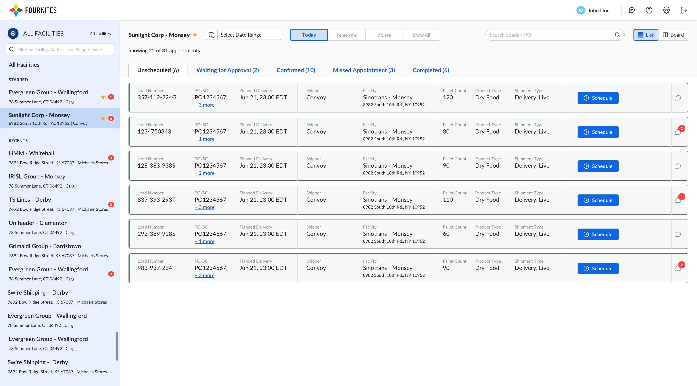
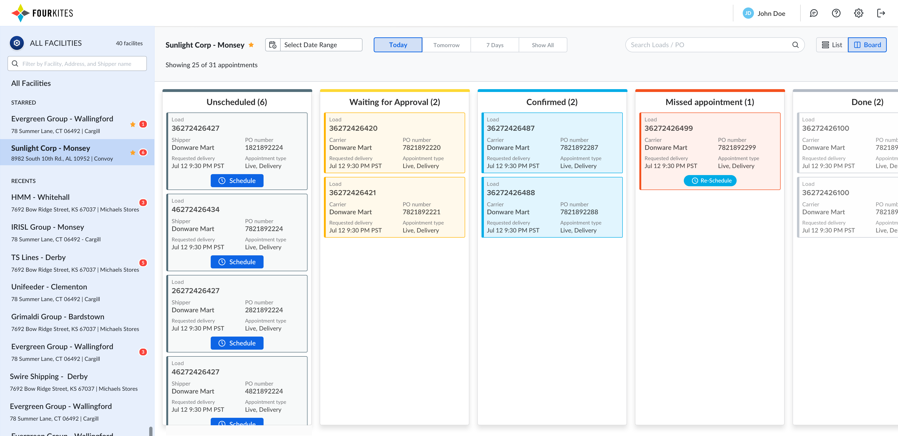
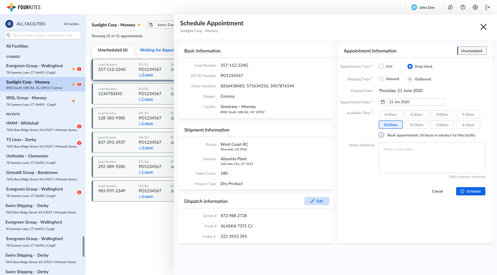
Customer testimonials
"We are scheduling approximately 1200 appointments per month in Appointment Manager, resulting in 300 fewer emails per day and 480 minutes of saved time daily (8 minutes per appointment). In addition to the email and time savings, on-time delivery on live unload shipments has improved by 10% due to the ability to secure the live load pick up in a timely manner."
Tony Poole, Senior Transportation Manager at Kimberly-Clark
"FourKites' Appointment Manager, which is the first universal platform that integrates with all of our systems, would save our dispatchers approximately eight hours a week, and allow them to shift their focus to higher-value tasks."
Sanford Gruhn, Director of Sales, K&B Transportation, Inc
"The simplicity of the user interface made it that much easier for both our DC associates and carriers to use. They're eager to use it because it shaves so much time off their day."
Jane Kennedy, Manager of Carrier Relations and Inbound Freight, Michaels